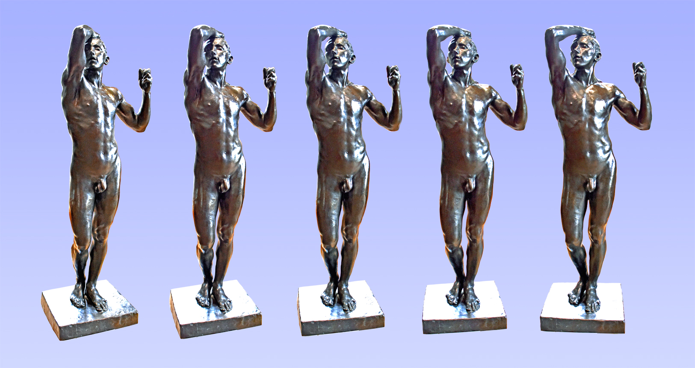

Au musée Rodin
Tout comme les sculptures du musée du Louvre, celles du musée Rodin peuvent avantageusement faire l'objet d'une présentation en 3D par le stéréogramme. En voici quelques exemples sélectionnés dans une série de 60 œuvres du célèbre sculpteur. Les plus connues ont fait l'objet de plusieurs stéréogrammes, parfois jusqu'à six.
Auguste Rodin - Buste

Auguste Rodin est né à Paris le 12 novembre 1840 et mort à Meudon le 17 novembre 1917. Ce buste de 1910, quand il est âgé de soixante-dix ans, dédicacé « Au maître Rodin - Ces profils rassemblés », est dû au sculpteur français Antoine Bourdelle, ancien praticien de l’atelier Rodin et ami du maître. Réalisée selon la méthode théorisée par Rodin de l’exécution de profils du modèle vus sous des angles différents et de plus en plus nombreux, l’œuvre est un vibrant hommage au grand maître. La coiffure formant comme les deux petites cornes d’un faune peut contribuer à l’évocation d’un dieu Terme. La fonte de l’exemplaire présenté au musée Rodin de Paris a été réalisée par le fondeur Alexis Rudier en 1920. Bronze, Hauteur 90 cm.
Diane
La déesse romaine de la chasse et de la Lune est ici reconnaissable à son carquois et au croissant de Lune qui orne sa chevelure à la coiffure très raffinée. Rodin lui a donné des traits juvéniles et une grâce ingénue, comme à de nombreux bustes féminins qu’il a souvent réalisés en terre cuite dès sa jeunesse. Celui-ci, créé vers 1875-1879, est marqué par l’influence de sculpteurs comme Carpeaux ou Carrier-Belleuse et reflète l’admiration que Rodin partageait avec eux pour la sculpture du XVIIIe siècle. Il reflète également l’engouement bourgeois de son époque pour ces sujets. Marbre, hauteur 62 cm.
Idylle, dite Idylle Antony Roux
Issu des recherches de Rodin pour La Porte de l’Enfer, ce groupe, réalisé avant 1887, était à l’origine composé de deux femmes, dans l’esprit des Métamorphoses d’Ovide, que l’on peut voir en haut du jambage droit de la Porte. C’est le riche collectionneur marseillais Antony Roux qui fit remplacer l’une d’elles par un homme, et c’est également sur son souhait qu’il n’existe aucun autre exemplaire, en aucun matériau, de ce groupe. Bronze, hauteur 48 cm.
L'âge d'airain
C'est la sculpture qui donna l’élan décisif à la carrière d’Auguste Rodin et à la notoriété qui fut la sienne. Réalisée en plâtre de 1875 à 1877 à Bruxelles où il travaillait à la décoration de bâtiments, elle fut présentée en 1877 au Cercle artistique et littéraire de la capitale belge. L’impression de vie donnée était saisissante et un journaliste suggéra que l’œuvre avait pu être moulée directement sur le corps du modèle, un jeune soldat belge de 22 ans nommé Auguste Neyt. Ce n'est qu'après trois années de débats que des experts purent démontrer qu’il n’en était rien. Instruit par cette mésaventure, Rodin évita par la suite de sculpter des personnages grandeur nature. La sculpture originale, en plâtre, est aujourd’hui disparue mais Rodin en avait réalisé une seconde dont on tira de nombreux autres moulages, en plâtre et en bronze, que l’on peut voir dans différents musées parisiens et d’autres villes, françaises et étrangères. Le modèle présenté au musée Rodin à Paris a été fondu avant 1941 par Alexis Rudier, fondeur à Paris. Bronze, Hauteur 1,80 m.
La Cathédrale

Passionné par les études de mains dont il réalise de nombreuses compositions, Rodin, dans ses voyages à travers la France, a également été conquis par la beauté des cathédrales gothiques. Il écrit et publie en 1914 "Les Cathédrales de France", ouvrage de réflexions personnelles sur ce que lui inspirent cette architecture et ses sculptures. Les immenses voûtes en ogives évoquent pour lui « des mains qui se rejoignent pour prier ». Et c'est le titre “La Cathédrale” qu'il choisira de donner définitivement à une œuvre qu'il ne destinait pas initialement à cette symbolique, parce que l'œuvre joint deux mains droites, ce qui ne peut exprimer une attitude de prière. Les cathédrales, pour Auguste Rodin, sont une expression du génie créatif français telle que «Toute la France est dans les cathédrales, comme toute la Grèce est dans le Parthénon.» Pierre, hauteur 64 cm.
Le Baiser
Rodin avait choisi pour titre à cette œuvre ”Francesca da Rimini”. Elle représentait en effet un couple, Paolo Malatesta et Francesca da Rimini, tiré de ”La Divine comédie” de Dante, poème du XIVe siècle dont s'inspirait Rodin pour son œuvre colossale "La Porte de l'Enfer". Ce couple adultère tombé amoureux au cours d'une lecture commune est ensuite tué par le mari de Francesca et condamné à errer dans les Enfers. Cette relation avec ”la Porte de l’Enfer” fut ensuite oubliée et il ne subsista que la teneur érotique de la scène qui fit que les critiques d’art et l’habitude prise par le public la firent dénommer simplement ”Le Baiser”. Plusieurs praticiens au service de Rodin produisirent, de son vivant et après sa mort, des exemplaires du ”Baiser” en marbre, de grande taille, visibles aujourd’hui dans d’autres grandes villes, Londres, Copenhage, Philadelphie. Un exemplaire en plâtre, de Rodin, est visible au musée Rodin de Meudon, un bronze fondu par Rudier au jardin des Tuileries, à Paris, et de multiples exemplaires plus petits témoignent de l’immense succès de l’œuvre. Marbre, hauteur 1,81 m.
Le Penseur

Sans doute la plus célèbre dans le Monde des œuvres d'Auguste Rodin, Le Penseur est un témoignage de l'admiration de l'artiste pour la sculpture de Michel-Ange. Destiné initialement à orner le centre de l'imposte de la monumentale Porte de l'Enfer, elle est probablement une des premières figures créées par Rodin dans cette perspective. Il l'avait intitulée Le Poète car elle représentait Dante, l'auteur de La divine Comédie dont il s'inspirait. Ce n'est qu'en 1888 que le modelage original en plâtre de 1880-1881, d'une hauteur de 70 cm, reçut pour appellation Le Penseur. Agrandi en 1904, il fut raillé par une partie de la critique, qualifié de brute, de gorille, de Caliban. Mais il fut plus admiré encore pour ses qualités, tant plastiques que symboliques. La statue monumentale du jardin du musée de Paris a été réalisée par le fondeur Alexis Rudier en 1904. De nombreuses répliques du Penseur, de tailles diverses, existent en France et dans le Monde, sur la tombe d'Auguste Rodin à Meudon, à Saint-Paul-de-Vence, à Saint-Dié-des-Vosges, à Copenhague, à Laeken, à Recife, à San Francisco, à Shizuoka, au Vatican, et d'autres encore… Bronze, hauteur 1,80 m.